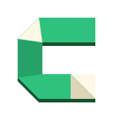
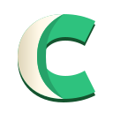
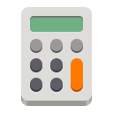

01Recommended

Folded C
A fold with a signature
A little space for big ideas, given a new shape. Three paper studies for a warmer Carver identity that feels at home on GNOME.

A fold with a signature
A page with room for ideas

A softer kind of structure
The best balance of a memorable silhouette and a paper metaphor. Its crisp folds give Carver a signature without adding a badge or a printed letter. Cut paper is the more familiar alternative; Curled sheet is the softer, more abstract one.
Actual CSS sizes below · best viewed at 100% zoom
Inter Semibold / 600. A simple wordmark lets the folded shape carry the personality.
What works. The strongest identity. The open silhouette reads quickly, while the cream folds make the shape feel like paper.
The tradeoff. At 32px, the lower fold becomes a small cream triangle. The dedicated symbolic keeps the open silhouette and drops the folds.
Reference icons and Carver share a 64px canvas.

CalculatorExisting copy · new palette and typography
From a passing thought to your next big project, give your ideas a place to grow. Write freely, bring your notes together, and find what you need when you need it.
From a passing thought to your next big project, give your ideas a place to grow. Write freely, bring your notes together, and find what you need when you need it.
Actual CSS sizes below · best viewed at 100% zoom
Inter Semibold / 600. A simple wordmark lets the folded shape carry the personality.
What works. The most literal note-taking metaphor. A turned corner makes the sheet familiar, and the open edge gives it a distinctive cut.
The tradeoff. The corner and cut edge soften at 32px. Its rectangular weight is a little stronger than the other two; the symbolic preserves the cutout.
Reference icons and Carver share a 64px canvas.
Existing copy · new palette and typography
From a passing thought to your next big project, give your ideas a place to grow. Write freely, bring your notes together, and find what you need when you need it.
From a passing thought to your next big project, give your ideas a place to grow. Write freely, bring your notes together, and find what you need when you need it.
Actual CSS sizes below · best viewed at 100% zoom
Inter Semibold / 600. A simple wordmark lets the folded shape carry the personality.
What works. The warmest, most tactile option. A broad cream underside makes the paper feel gently rolled rather than sharply folded.
The tradeoff. The curl can read as a ribbon or crescent rather than a note. At small sizes, the material effect gives way to the C silhouette.
Reference icons and Carver share a 64px canvas.
Existing copy · new palette and typography
From a passing thought to your next big project, give your ideas a place to grow. Write freely, bring your notes together, and find what you need when you need it.
From a passing thought to your next big project, give your ideas a place to grow. Write freely, bring your notes together, and find what you need when you need it.
A shared palette keeps the comparison about shape.
#2EC27E
#26A269
#14532E
#FFF8E7
#DED4B8
#17352B